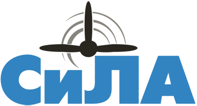

📖 出发前必读：《俄罗斯境内旅行与飞行指南 ver.2026》
安东诺夫 Ан-28（An-28）
- 安-28（北约代号：Cash，意为”现金”），属于双发轻型短距起降（STOL）通用运输机。
- 机身小巧，通常载客量在15-18人左右。起落架为固定式，外观显得十分”粗犷”，非常适合在没有铺装跑道的简易机场甚至野外起降。
- 作为短距离通勤支线客机，安-28的飞行高度通常不挑高，可以在空中欣赏到绝佳的地面风景，当然其客舱隔音也基本等于没有。
- An-28的后续型号由波兰MZL生产，称之为M-28，目前在欧洲和美洲常用于高空跳伞飞机。
| 参数 | An-28 |
|---|---|
| 首飞 | 1969年 |
| 产量 | 191架 |
| 发动机 | 2× TVD-10B 涡桨（960 shp） |
| 载客 | 17人 |
| 巡航速度 | 335 km/h |
| 航程 | 1,365 km |
| 起飞距离 | 290 m（短距起降性能极佳） |
西伯利亚轻型航空（SiLA / СиЛА）

购票平台：航司官网
SiLA（Siberian Light Aviation）航司简直是体验远东硬核轻型飞机的宝藏航司，常年在马加丹（Magadan）等气候极为严酷的远东地区运行。机队包括安-28和L-410等轻型多用途飞机。去往科雷马沿线地区体验一把安-28低空飞越冻土荒原，绝对是独特的俄式浪漫。
| 乘坐体验 | 排班密度 | 性价比 | 稳定程度 |
|---|---|---|---|
| 🌟🌟🌟 | 🌟🌟🌟 | 🌟🌟 | 🌟🌟🌟 |

An-28活跃的地区：
- 马加丹 Magadan
- 瑟苏曼 Susuman
- 奥姆苏克昌 Omsukchan
- 赛姆昌 Seymchan
排班可以在航司官网马加丹方向的页面查找：https://sila-avia.ru/for-passengers/popular-destinations/napravlenie-mag/